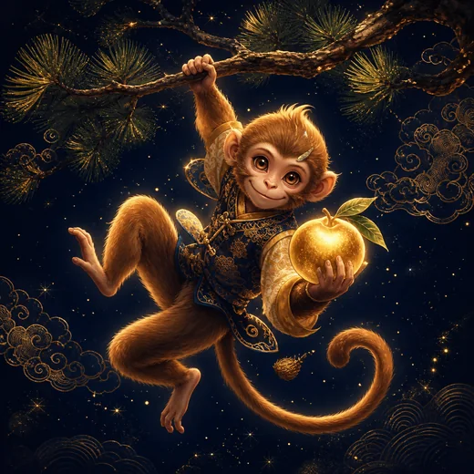

이 게시물은 쿠팡 파트너스 활동의 일환으로, 이에 따른 일정액의 수수료를 제공받습니다.


2006년생 2027년 운세
2006년생 한눈에 보기
06년생에게 힘이 되는 물건
06년생은 토 기운이라, 그 기운을 낳아 주는 화 기운 물건이 힘이 됩니다.
 빨간 장지갑쿠팡에서 보기 →
빨간 장지갑쿠팡에서 보기 → 향초 캔들쿠팡에서 보기 →
향초 캔들쿠팡에서 보기 → 레드 머그컵쿠팡에서 보기 →
레드 머그컵쿠팡에서 보기 →개띠 기준입니다. 1월~2월 초 생일이면 띠가 앞 해일 수 있으니 아래 '띠가 바뀌는 날'을 보세요.
쿠팡 파트너스 링크이며, 구매 시 동네보살이 수수료를 받습니다.

2006년생 개띠에게 2027년은 친구와 선후배가 곁에 모여 힘이 붙는 해입니다. 정미년의 양띠 기운과는 서로 다듬으며 정리해 가는 사이라, 말투와 거리만 조절하면 오히려 관계가 단단해집니다. 만 20세에서 만 21세로 넘어가는 이 나이는 동아리 활동이 활발해지고 군 입대 시기를 정하는 분도 많아 약속과 모임이 크게 늘어납니다. 함께 쓰는 돈도 커지기 쉬우니, 버는 것보다 지키며 모으는 쪽으로 한 해를 짜면 넉넉해집니다. 회비나 계약처럼 서류와 숫자가 오가는 일은 처음에 분명히 정해 두세요.
2006년생의 일과 돈
공부에서는 전공 수업과 동아리, 아르바이트를 한꺼번에 해내려다 성적이 밀리기 쉬우니, 학기 초에 꼭 챙길 과목 두 개를 정해 두세요. 아르바이트를 시작할 때 근로계약서와 시급, 근무 시간을 글로 남겨 두는 것은 원칙을 아끼는 개띠와도 잘 맞습니다. 돈은 한 달 용돈 가운데 모임에 쓸 몫을 미리 떼어 두면 씀씀이가 한눈에 들어옵니다. 군 입대를 앞둔 분이라면 입대 전 저축 목표를 하나 세워 보세요.
사람과 가족
사람 사이에서는 한번 자기 사람으로 정하면 끝까지 지키는 개띠의 신의가 빛나는 해입니다. 친구 사이의 돈 거래나 보증 같은 부탁은 정중히 사양하는 것이 우정을 오래 지키는 길입니다. 생각이 다른 친구와 말이 엇갈릴 때는 감정이 가라앉은 다음 날 다시 이야기해 보세요. 연애를 시작했다면 믿는다는 말을 자주 건네는 것이 관계를 편안하게 합니다.
건강과 생활
모임과 행사로 귀가가 늦어지는 날이 많아지기 쉬운 해입니다. 늦은 약속이 이어진 다음 날은 일찍 잠자리에 들어 몸을 회복하는 날로 정해 두세요. 입대를 앞두고 있다면 미리 아침에 뛰는 습관을 들여 두면 적응이 훨씬 수월합니다.
2027년에 해 보면 좋은 세 가지
- 모임에 나갈 때는 그날 쓸 금액을 미리 정해 두고 그 안에서 즐겨 보세요.
- 입대나 휴학처럼 큰 일정은 가족과 먼저 의논해 날짜를 달력에 적어 두세요.
- 친구에게 돈을 빌려 달라는 부탁을 받으면 그 자리에서 답하지 말고 하루 생각한 뒤 답하세요.
1월~2월 초에 태어났다면 — 띠가 바뀌는 날
2006년 2월 4일 08:27부터 丙戌 개띠입니다. 그 전 출생은 乙酉 닭띠에 해당합니다. 2005년생 풀이를 확인하세요.
06년생 연예인·유명인 (2006년생)
더 자세히 보기
자주 묻는 질문
2006년생이 올해 먼저 해 볼 일은 무엇인가요?
모임에 나갈 때는 그날 쓸 금액을 미리 정해 두고 그 안에서 즐겨 보세요.
2006년생의 생활에서는 어떤 점을 챙기나요?
모임과 행사로 귀가가 늦어지는 날이 많아지기 쉬운 해입니다. 늦은 약속이 이어진 다음 날은 일찍 잠자리에 들어 몸을 회복하는 날로 정해 두세요. 입대를 앞두고 있다면 미리 아침에 뛰는 습관을 들여 두면 적응이 훨씬 수월합니다.